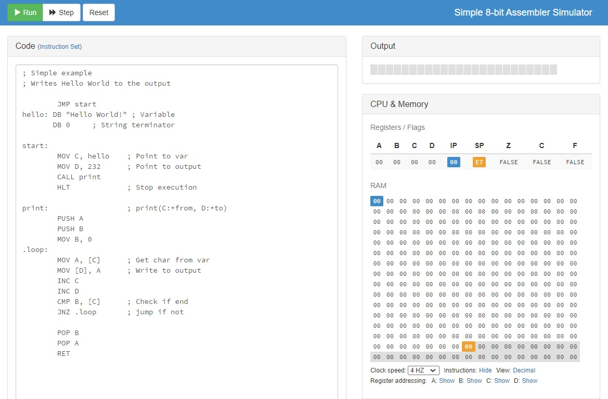

マシン語に近いなにか
みなさんはアセンブリ言語をご存知でしょうか。
アセンブリ言語は、コンピュータのアーキテクチャ(コンピュータを構成する物理的な素材)に直結するマシン語(0と1や16進数)とわたしたちが普段使用するプログラミング言語の間あたりに位置するものです。一般的なプログラミング言語が高水準プログラミング言語であるのに対して、アセンブリ言語は低水準プログラミング言語と呼ばれます。
かっこいいから。
アセンブリ言語は難解な分、処理に無駄がなく高速で実行することができます。
アセンブリ言語の書き方はそのコンピュータのCPUに依存します。そのため今回はx86というみんなが使っているプロセッサを前提にアセンブリ言語を書いていきます。intelやAMD(Ryzen)のプロセッサはx86で、スマホによく使われるSnap DragonやAppleが開発するApple SiliconはARMというCPUに分類されます。パソコンとスマホの違いはOSといえばそうですが、より細かくいうとCPUアーキテクチャの違いといえます。
「Simple 8-bit Assembler Simulator」という、x86風にアセンブリ言語を書くことができるシミュレーターがあり、そこには既定で"Hello World"を出力するコードが書かれています。今回はとりあえずそれを読みたいと思います。

“hello: DB～”の"hello"が一連の処理のメソッド名(?)的なものになり、DB(Data
Byte)に入力する文字列が入ります。”start”はメインメソッド、”print”はプリントするための関数、”loop”はループ。最後にあるRETで処理がメインメソッドに戻ります。MOVは、この場合４つのレジスタ(右表にあるA,
B, C, D)にデータを代入する命令で、PUSHとかPOPではスタックを操作している感じがうかがえます。
正直よくわかりませんが、こんな面倒な処理を一行で済ませてくれる高級プログラミング言語は偉大ですね。ちなみに横の表はレジスタとRAMに格納されるデータの遷移が示されます。おもしろい。
今回の記事は前篇なのでここまでですが、後編ではもう少し理解を深めてちょっとしたコードを書いてみたいと思います。